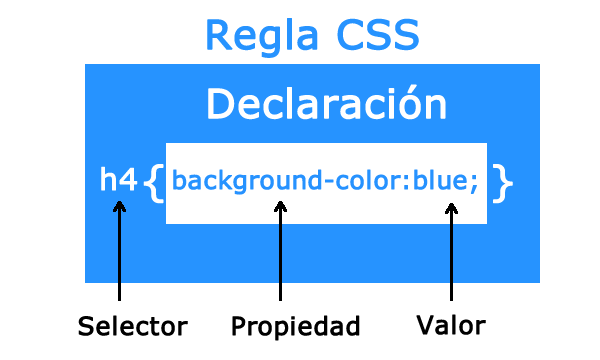

Estructura básica de un estilo

La Regla es el conjunto que define un estilo y está formado por el selector y la declaración.
El Selector indica el elemento o elementos XHTML a los que se aplica la regla.
La Declaración determina el estilo que se aplicará al elemento y está formada por propiedades a las que se les asigna un valor.
Tipo de Selectores
Los selectores pueden dividirse en 5 categorías:
- Simples (seleccionan elementos basados en el nombre, id o clase)
- Combinador (seleccionan elementos en función de una relación específica entre ellos)
- Pseudo-clase (seleccionan elementos en función de un determinado estado)
- Pseudo-elementos (seleccionan y diseñan una parte del elemento)
- De atributo (seleccionan elementos basados en un atributo o valor del atributo)